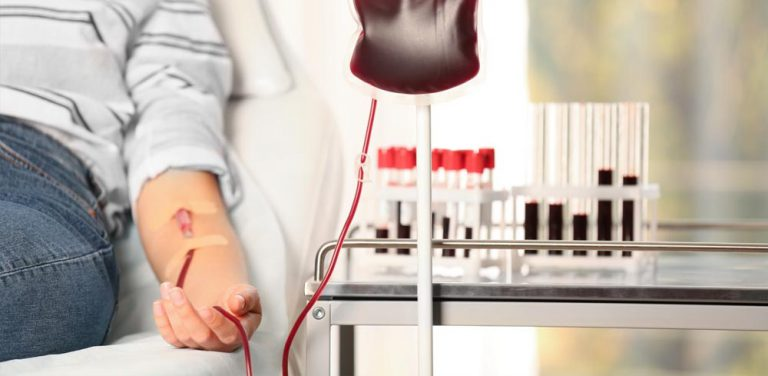

044-6700-0000
- dean.mjskjsfjbjhsdcjhbs.in
Get An Appoinment
Looking for an Expert
Max Institute of Laparoscopic, Endoscopic and Bariatric
Surgery at Max Hospital, Saket, Delhi has taken a
giant leap in
Robotic surgery with the Next-Generation
Services
Looking for an Expert
Our Healthcare is home to some of the
eminent doctors in the world.

Our Healthcare is home to some of the
eminent doctors in the world.
Specialities & Procedures
Specialities
Procedures
Cancer Care / Oncology
Robotic Surgery
Cardiac Sciences
Liver Transplant and Biliary Sciences
Orthopaedics & Joint Replacement
Neurosciences
Gastroenterology, Hepatology & Endoscopy
Aortic Valve Surgery
Knee Replacement Surgery
Da Vinci Robotic Surgery
Bone Marrow Transplant (BMT)
Lung Transplant
Thoracic Surgery
LVAD Surgery
Bariatric Surgery
Blood Bank
- Our Department of Transfusion Medicine & Blood Bank provides 24x7 facility with blood component therapy, Apheresis, and Immunohematology laboratory diagnostics.
- We provide high-quality patient care and take part in clinical research programs which helps us increase our knowledge and improves our practice of transfusion medicine.

Next Generation Robotic Surgeries
Info
Max Institute of Laparoscopic, Endoscopic and Bariatric
Surgery at Max Hospital, Saket, Delhi has taken a
giant leap in
Robotic surgery with the Next-Generation
Robot- VERSIUS from Cambridge Medical Robotics. Versius
robot
offers more
flexibility, precision, and control for various surgeries such as Gallbladder Stones, Hernia,
Appendicitis,
Weight Loss
(Bariatric) Surgery, Fundoplication and others.
Equipment:
- Automated Blood grouping and Crossmatching, Antibody Screening and Antiglobulin tests
- Refrigerated centrifuges to separate blood components from whole blood effectively.
- Plasma freezers to maintain the potency of clotting factors
- Platelet incubators and agitators to store platelets at a temperature of 22oC and agitate them
constantly
to avoid platelet aggregation. - Apheresis,cell separator to collect specified component from donor to improve treatment quality in patients
- VITROS, fully-automated transfusion-transmitted infection testing helps to prevent transmission of infection.
- Sterile tube-connecting device, TSCD avoids blood bag contamination.
- Quality control -regular quality control checks are done for all reagents, antisera, blood components
and
equipment.
The department also participates in an external quality assurance with CMC, Vellore by CLIA.